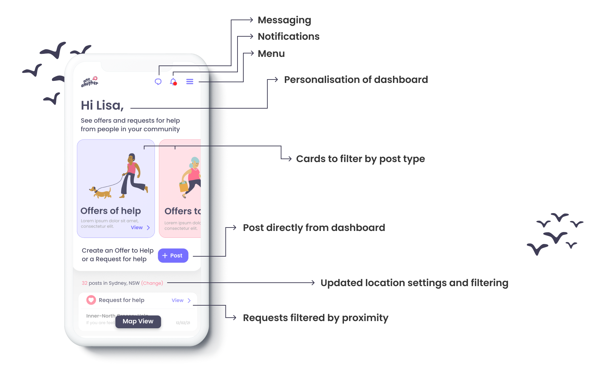
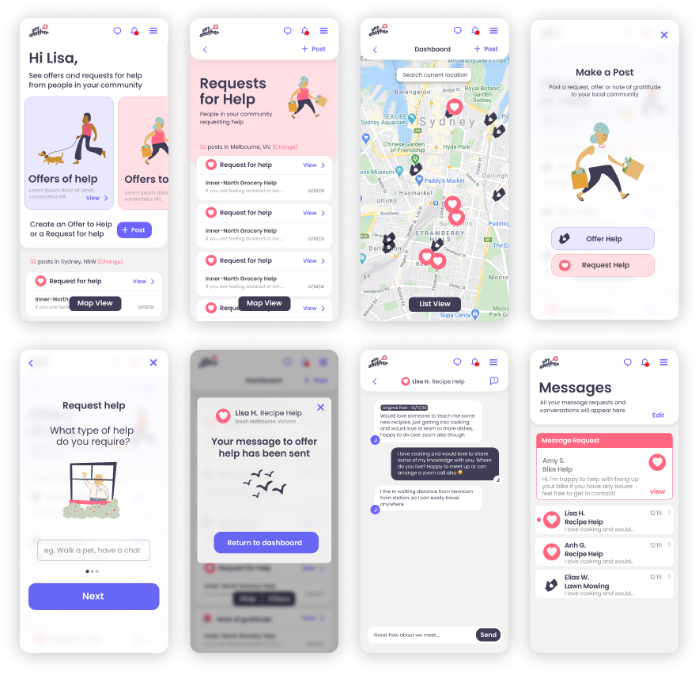
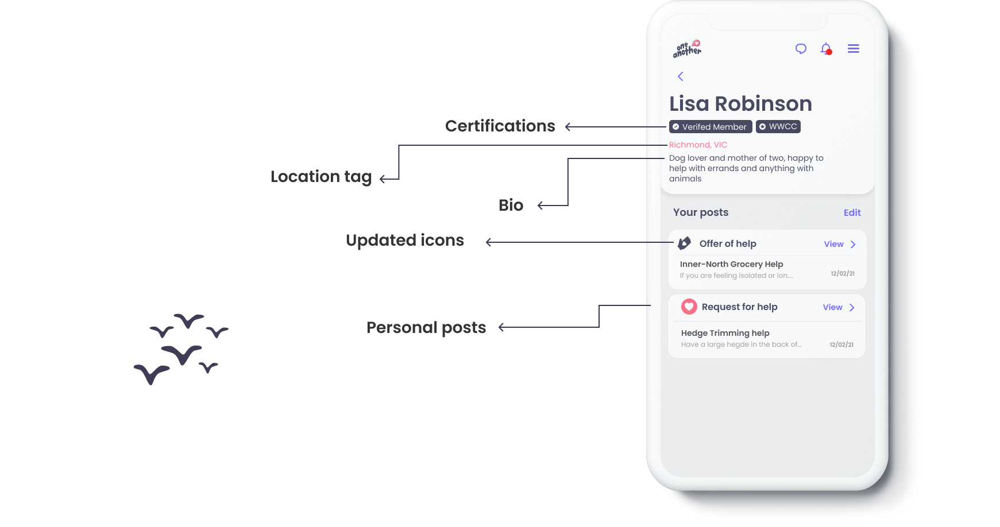

One Another — Relaunch

One Another is a social kindness platform connecting people who need help with people offering it. I ran usability testing and redesigned the interface and information architecture ahead of its iOS and Android relaunch.
The problem
Usability testing with five participants showed people struggled to navigate to key features, and the interface felt bland and a little cold for a platform built on asking for and offering help.
The work
Simplified the information architecture, brought key actions onto the dashboard, and softened the whole visual language — illustration, rounder cards, gentler colour — to make asking for help feel easy.


Outcome
users in the first month post-relaunch
participants in the usability study
native apps at relaunch
For more details on the project, contact me for a deep dive on the topic — hello@jacoblaird.com.